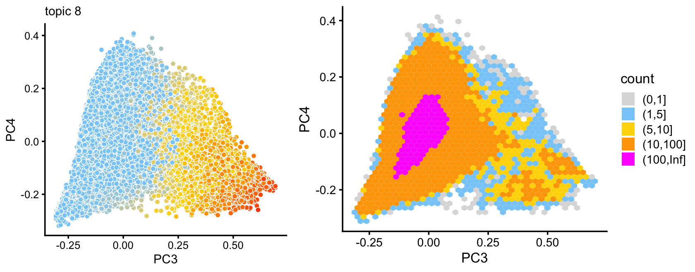
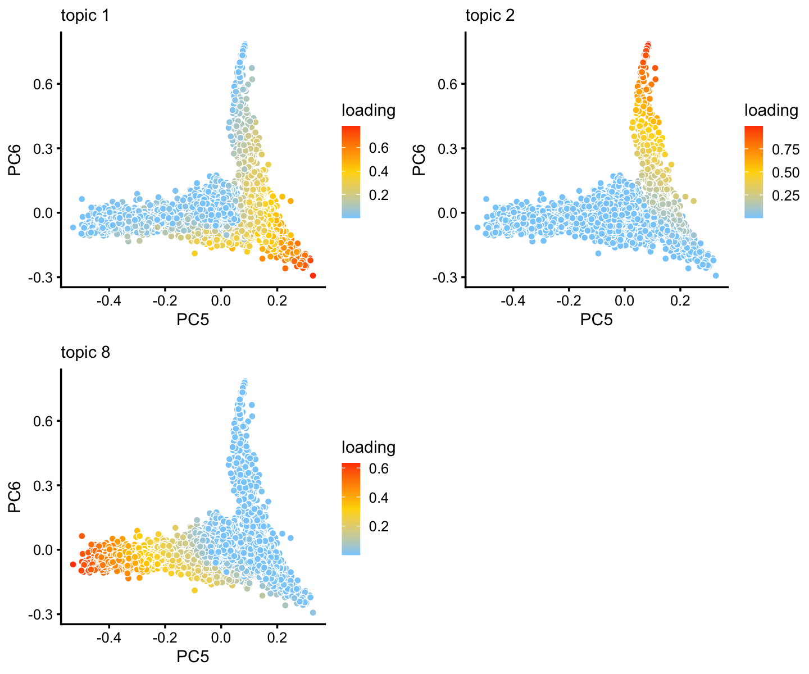
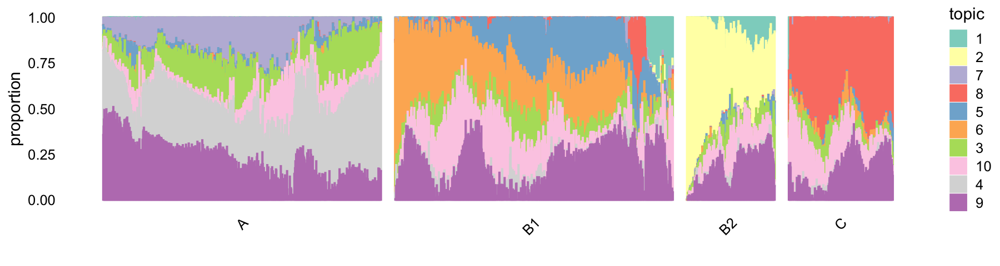

Last updated: 2020-09-02
Checks: 7 0
Knit directory: pcarbo/analysis/
This reproducible R Markdown analysis was created with workflowr (version 1.6.2.9000). The Checks tab describes the reproducibility checks that were applied when the results were created. The Past versions tab lists the development history.
Great! Since the R Markdown file has been committed to the Git repository, you know the exact version of the code that produced these results.
Great job! The global environment was empty. Objects defined in the global environment can affect the analysis in your R Markdown file in unknown ways. For reproduciblity it’s best to always run the code in an empty environment.
The command set.seed(1) was run prior to running the code in the R Markdown file. Setting a seed ensures that any results that rely on randomness, e.g. subsampling or permutations, are reproducible.
Great job! Recording the operating system, R version, and package versions is critical for reproducibility.
Nice! There were no cached chunks for this analysis, so you can be confident that you successfully produced the results during this run.
Great job! Using relative paths to the files within your workflowr project makes it easier to run your code on other machines.
Great! You are using Git for version control. Tracking code development and connecting the code version to the results is critical for reproducibility.
The results in this page were generated with repository version 5b6e0d3. See the Past versions tab to see a history of the changes made to the R Markdown and HTML files.
Note that you need to be careful to ensure that all relevant files for the analysis have been committed to Git prior to generating the results (you can use wflow_publish or wflow_git_commit). workflowr only checks the R Markdown file, but you know if there are other scripts or data files that it depends on. Below is the status of the Git repository when the results were generated:
Ignored files:
Ignored: analysis/fit-scd-ex-k=10.rds
Ignored: sbatch/makefile_demo/sims/sim0001.csv
Ignored: sbatch/makefile_demo/sims/sim0002.csv
Ignored: sbatch/makefile_demo/sims/sim0003.csv
Ignored: sbatch/makefile_demo/sims/sim0004.csv
Ignored: sbatch/makefile_demo/sims/sim0005.csv
Ignored: sbatch/makefile_demo/sims/sim0006.csv
Ignored: sbatch/makefile_demo/sims/sim0007.csv
Ignored: sbatch/makefile_demo/sims/sim0008.csv
Ignored: sbatch/makefile_demo/sims/sim0009.csv
Ignored: sbatch/makefile_demo/sims/sim0010.csv
Ignored: sbatch/makefile_demo/sims/sim0011.csv
Ignored: sbatch/makefile_demo/sims/sim0012.csv
Ignored: sbatch/makefile_demo/sims/sim0013.csv
Ignored: sbatch/makefile_demo/sims/sim0014.csv
Ignored: sbatch/makefile_demo/sims/sim0015.csv
Ignored: sbatch/makefile_demo/sims/sim0016.csv
Ignored: sbatch/makefile_demo/sims/sim0017.csv
Ignored: sbatch/makefile_demo/sims/sim0018.csv
Ignored: sbatch/makefile_demo/sims/sim0019.csv
Ignored: sbatch/makefile_demo/sims/sim0020.csv
Ignored: sbatch/makefile_demo/sims/sim0021.csv
Ignored: sbatch/makefile_demo/sims/sim0022.csv
Ignored: sbatch/makefile_demo/sims/sim0023.csv
Ignored: sbatch/makefile_demo/sims/sim0024.csv
Ignored: sbatch/makefile_demo/sims/sim0025.csv
Ignored: sbatch/makefile_demo/sims/sim0026.csv
Ignored: sbatch/makefile_demo/sims/sim0027.csv
Ignored: sbatch/makefile_demo/sims/sim0028.csv
Ignored: sbatch/makefile_demo/sims/sim0029.csv
Ignored: sbatch/makefile_demo/sims/sim0030.csv
Ignored: sbatch/makefile_demo/sims/sim0031.csv
Ignored: sbatch/makefile_demo/sims/sim0032.csv
Ignored: sbatch/makefile_demo/sims/sim0033.csv
Ignored: sbatch/makefile_demo/sims/sim0034.csv
Ignored: sbatch/makefile_demo/sims/sim0035.csv
Ignored: sbatch/makefile_demo/sims/sim0036.csv
Ignored: sbatch/makefile_demo/sims/sim0037.csv
Ignored: sbatch/makefile_demo/sims/sim0038.csv
Ignored: sbatch/makefile_demo/sims/sim0039.csv
Ignored: sbatch/makefile_demo/sims/sim0040.csv
Ignored: sbatch/makefile_demo/sims/sim0041.csv
Ignored: sbatch/makefile_demo/sims/sim0042.csv
Ignored: sbatch/makefile_demo/sims/sim0043.csv
Ignored: sbatch/makefile_demo/sims/sim0044.csv
Ignored: sbatch/makefile_demo/sims/sim0045.csv
Ignored: sbatch/makefile_demo/sims/sim0046.csv
Ignored: sbatch/makefile_demo/sims/sim0047.csv
Ignored: sbatch/makefile_demo/sims/sim0048.csv
Ignored: sbatch/makefile_demo/sims/sim0049.csv
Ignored: sbatch/makefile_demo/sims/sim0050.csv
Ignored: sbatch/makefile_demo/sims/sim0051.csv
Ignored: sbatch/makefile_demo/sims/sim0052.csv
Ignored: sbatch/makefile_demo/sims/sim0053.csv
Ignored: sbatch/makefile_demo/sims/sim0054.csv
Ignored: sbatch/makefile_demo/sims/sim0055.csv
Ignored: sbatch/makefile_demo/sims/sim0056.csv
Ignored: sbatch/makefile_demo/sims/sim0057.csv
Ignored: sbatch/makefile_demo/sims/sim0058.csv
Ignored: sbatch/makefile_demo/sims/sim0059.csv
Ignored: sbatch/makefile_demo/sims/sim0060.csv
Ignored: sbatch/makefile_demo/sims/sim0061.csv
Ignored: sbatch/makefile_demo/sims/sim0062.csv
Ignored: sbatch/makefile_demo/sims/sim0063.csv
Ignored: sbatch/makefile_demo/sims/sim0064.csv
Ignored: sbatch/makefile_demo/sims/sim0065.csv
Ignored: sbatch/makefile_demo/sims/sim0066.csv
Ignored: sbatch/makefile_demo/sims/sim0067.csv
Ignored: sbatch/makefile_demo/sims/sim0068.csv
Ignored: sbatch/makefile_demo/sims/sim0069.csv
Ignored: sbatch/makefile_demo/sims/sim0070.csv
Ignored: sbatch/makefile_demo/sims/sim0071.csv
Ignored: sbatch/makefile_demo/sims/sim0072.csv
Ignored: sbatch/makefile_demo/sims/sim0073.csv
Ignored: sbatch/makefile_demo/sims/sim0074.csv
Ignored: sbatch/makefile_demo/sims/sim0075.csv
Ignored: sbatch/makefile_demo/sims/sim0076.csv
Ignored: sbatch/makefile_demo/sims/sim0077.csv
Ignored: sbatch/makefile_demo/sims/sim0078.csv
Ignored: sbatch/makefile_demo/sims/sim0079.csv
Ignored: sbatch/makefile_demo/sims/sim0080.csv
Ignored: sbatch/makefile_demo/sims/sim0081.csv
Ignored: sbatch/makefile_demo/sims/sim0082.csv
Ignored: sbatch/makefile_demo/sims/sim0083.csv
Ignored: sbatch/makefile_demo/sims/sim0084.csv
Ignored: sbatch/makefile_demo/sims/sim0085.csv
Ignored: sbatch/makefile_demo/sims/sim0086.csv
Ignored: sbatch/makefile_demo/sims/sim0087.csv
Ignored: sbatch/makefile_demo/sims/sim0088.csv
Ignored: sbatch/makefile_demo/sims/sim0089.csv
Ignored: sbatch/makefile_demo/sims/sim0090.csv
Ignored: sbatch/makefile_demo/sims/sim0091.csv
Ignored: sbatch/makefile_demo/sims/sim0092.csv
Ignored: sbatch/makefile_demo/sims/sim0093.csv
Ignored: sbatch/makefile_demo/sims/sim0094.csv
Ignored: sbatch/makefile_demo/sims/sim0095.csv
Ignored: sbatch/makefile_demo/sims/sim0096.csv
Ignored: sbatch/makefile_demo/sims/sim0097.csv
Ignored: sbatch/makefile_demo/sims/sim0098.csv
Ignored: sbatch/makefile_demo/sims/sim0099.csv
Ignored: sbatch/makefile_demo/sims/sim0100.csv
Ignored: sbatch/makefile_demo/sims/sim0101.csv
Ignored: sbatch/makefile_demo/sims/sim0102.csv
Ignored: sbatch/makefile_demo/sims/sim0103.csv
Ignored: sbatch/makefile_demo/sims/sim0104.csv
Ignored: sbatch/makefile_demo/sims/sim0105.csv
Ignored: sbatch/makefile_demo/sims/sim0106.csv
Ignored: sbatch/makefile_demo/sims/sim0107.csv
Ignored: sbatch/makefile_demo/sims/sim0108.csv
Ignored: sbatch/makefile_demo/sims/sim0109.csv
Ignored: sbatch/makefile_demo/sims/sim0110.csv
Ignored: sbatch/makefile_demo/sims/sim0111.csv
Ignored: sbatch/makefile_demo/sims/sim0112.csv
Ignored: sbatch/makefile_demo/sims/sim0113.csv
Ignored: sbatch/makefile_demo/sims/sim0114.csv
Ignored: sbatch/makefile_demo/sims/sim0115.csv
Ignored: sbatch/makefile_demo/sims/sim0116.csv
Ignored: sbatch/makefile_demo/sims/sim0117.csv
Ignored: sbatch/makefile_demo/sims/sim0118.csv
Ignored: sbatch/makefile_demo/sims/sim0119.csv
Ignored: sbatch/makefile_demo/sims/sim0120.csv
Ignored: sbatch/makefile_demo/sims/sim0121.csv
Ignored: sbatch/makefile_demo/sims/sim0122.csv
Ignored: sbatch/makefile_demo/sims/sim0123.csv
Ignored: sbatch/makefile_demo/sims/sim0124.csv
Ignored: sbatch/makefile_demo/sims/sim0125.csv
Ignored: sbatch/makefile_demo/sims/sim0126.csv
Ignored: sbatch/makefile_demo/sims/sim0127.csv
Ignored: sbatch/makefile_demo/sims/sim0128.csv
Ignored: sbatch/makefile_demo/sims/sim0129.csv
Ignored: sbatch/makefile_demo/sims/sim0130.csv
Ignored: sbatch/makefile_demo/sims/sim0131.csv
Ignored: sbatch/makefile_demo/sims/sim0132.csv
Ignored: sbatch/makefile_demo/sims/sim0133.csv
Ignored: sbatch/makefile_demo/sims/sim0134.csv
Ignored: sbatch/makefile_demo/sims/sim0135.csv
Ignored: sbatch/makefile_demo/sims/sim0136.csv
Ignored: sbatch/makefile_demo/sims/sim0137.csv
Ignored: sbatch/makefile_demo/sims/sim0138.csv
Ignored: sbatch/makefile_demo/sims/sim0139.csv
Ignored: sbatch/makefile_demo/sims/sim0140.csv
Ignored: sbatch/makefile_demo/sims/sim0141.csv
Ignored: sbatch/makefile_demo/sims/sim0142.csv
Ignored: sbatch/makefile_demo/sims/sim0143.csv
Ignored: sbatch/makefile_demo/sims/sim0144.csv
Ignored: sbatch/makefile_demo/sims/sim0145.csv
Ignored: sbatch/makefile_demo/sims/sim0146.csv
Ignored: sbatch/makefile_demo/sims/sim0147.csv
Ignored: sbatch/makefile_demo/sims/sim0148.csv
Ignored: sbatch/makefile_demo/sims/sim0149.csv
Ignored: sbatch/makefile_demo/sims/sim0150.csv
Ignored: sbatch/makefile_demo/sims/sim0151.csv
Ignored: sbatch/makefile_demo/sims/sim0152.csv
Ignored: sbatch/makefile_demo/sims/sim0153.csv
Ignored: sbatch/makefile_demo/sims/sim0154.csv
Ignored: sbatch/makefile_demo/sims/sim0155.csv
Ignored: sbatch/makefile_demo/sims/sim0156.csv
Ignored: sbatch/makefile_demo/sims/sim0157.csv
Ignored: sbatch/makefile_demo/sims/sim0158.csv
Ignored: sbatch/makefile_demo/sims/sim0159.csv
Ignored: sbatch/makefile_demo/sims/sim0160.csv
Ignored: sbatch/makefile_demo/sims/sim0161.csv
Ignored: sbatch/makefile_demo/sims/sim0162.csv
Ignored: sbatch/makefile_demo/sims/sim0163.csv
Ignored: sbatch/makefile_demo/sims/sim0164.csv
Ignored: sbatch/makefile_demo/sims/sim0165.csv
Ignored: sbatch/makefile_demo/sims/sim0166.csv
Ignored: sbatch/makefile_demo/sims/sim0167.csv
Ignored: sbatch/makefile_demo/sims/sim0168.csv
Ignored: sbatch/makefile_demo/sims/sim0169.csv
Ignored: sbatch/makefile_demo/sims/sim0170.csv
Ignored: sbatch/makefile_demo/sims/sim0171.csv
Ignored: sbatch/makefile_demo/sims/sim0172.csv
Ignored: sbatch/makefile_demo/sims/sim0173.csv
Ignored: sbatch/makefile_demo/sims/sim0174.csv
Ignored: sbatch/makefile_demo/sims/sim0175.csv
Ignored: sbatch/makefile_demo/sims/sim0176.csv
Ignored: sbatch/makefile_demo/sims/sim0177.csv
Ignored: sbatch/makefile_demo/sims/sim0178.csv
Ignored: sbatch/makefile_demo/sims/sim0179.csv
Ignored: sbatch/makefile_demo/sims/sim0180.csv
Ignored: sbatch/makefile_demo/sims/sim0181.csv
Ignored: sbatch/makefile_demo/sims/sim0182.csv
Ignored: sbatch/makefile_demo/sims/sim0183.csv
Ignored: sbatch/makefile_demo/sims/sim0184.csv
Ignored: sbatch/makefile_demo/sims/sim0185.csv
Ignored: sbatch/makefile_demo/sims/sim0186.csv
Ignored: sbatch/makefile_demo/sims/sim0187.csv
Ignored: sbatch/makefile_demo/sims/sim0188.csv
Ignored: sbatch/makefile_demo/sims/sim0189.csv
Ignored: sbatch/makefile_demo/sims/sim0190.csv
Ignored: sbatch/makefile_demo/sims/sim0191.csv
Ignored: sbatch/makefile_demo/sims/sim0192.csv
Ignored: sbatch/makefile_demo/sims/sim0193.csv
Ignored: sbatch/makefile_demo/sims/sim0194.csv
Ignored: sbatch/makefile_demo/sims/sim0195.csv
Ignored: sbatch/makefile_demo/sims/sim0196.csv
Ignored: sbatch/makefile_demo/sims/sim0197.csv
Ignored: sbatch/makefile_demo/sims/sim0198.csv
Ignored: sbatch/makefile_demo/sims/sim0199.csv
Ignored: sbatch/makefile_demo/sims/sim0200.csv
Ignored: sbatch/makefile_demo/sims/sim0201.csv
Ignored: sbatch/makefile_demo/sims/sim0202.csv
Ignored: sbatch/makefile_demo/sims/sim0203.csv
Ignored: sbatch/makefile_demo/sims/sim0204.csv
Ignored: sbatch/makefile_demo/sims/sim0205.csv
Ignored: sbatch/makefile_demo/sims/sim0206.csv
Ignored: sbatch/makefile_demo/sims/sim0207.csv
Ignored: sbatch/makefile_demo/sims/sim0208.csv
Ignored: sbatch/makefile_demo/sims/sim0209.csv
Ignored: sbatch/makefile_demo/sims/sim0210.csv
Ignored: sbatch/makefile_demo/sims/sim0211.csv
Ignored: sbatch/makefile_demo/sims/sim0212.csv
Ignored: sbatch/makefile_demo/sims/sim0213.csv
Ignored: sbatch/makefile_demo/sims/sim0214.csv
Ignored: sbatch/makefile_demo/sims/sim0215.csv
Ignored: sbatch/makefile_demo/sims/sim0216.csv
Ignored: sbatch/makefile_demo/sims/sim0217.csv
Ignored: sbatch/makefile_demo/sims/sim0218.csv
Ignored: sbatch/makefile_demo/sims/sim0219.csv
Ignored: sbatch/makefile_demo/sims/sim0220.csv
Ignored: sbatch/makefile_demo/sims/sim0221.csv
Ignored: sbatch/makefile_demo/sims/sim0222.csv
Ignored: sbatch/makefile_demo/sims/sim0223.csv
Ignored: sbatch/makefile_demo/sims/sim0224.csv
Ignored: sbatch/makefile_demo/sims/sim0225.csv
Ignored: sbatch/makefile_demo/sims/sim0226.csv
Ignored: sbatch/makefile_demo/sims/sim0227.csv
Ignored: sbatch/makefile_demo/sims/sim0228.csv
Ignored: sbatch/makefile_demo/sims/sim0229.csv
Ignored: sbatch/makefile_demo/sims/sim0230.csv
Ignored: sbatch/makefile_demo/sims/sim0231.csv
Ignored: sbatch/makefile_demo/sims/sim0232.csv
Ignored: sbatch/makefile_demo/sims/sim0233.csv
Ignored: sbatch/makefile_demo/sims/sim0234.csv
Ignored: sbatch/makefile_demo/sims/sim0235.csv
Ignored: sbatch/makefile_demo/sims/sim0236.csv
Ignored: sbatch/makefile_demo/sims/sim0237.csv
Ignored: sbatch/makefile_demo/sims/sim0238.csv
Ignored: sbatch/makefile_demo/sims/sim0239.csv
Ignored: sbatch/makefile_demo/sims/sim0240.csv
Ignored: sbatch/makefile_demo/sims/sim0241.csv
Ignored: sbatch/makefile_demo/sims/sim0242.csv
Ignored: sbatch/makefile_demo/sims/sim0243.csv
Ignored: sbatch/makefile_demo/sims/sim0244.csv
Ignored: sbatch/makefile_demo/sims/sim0245.csv
Ignored: sbatch/makefile_demo/sims/sim0246.csv
Ignored: sbatch/makefile_demo/sims/sim0247.csv
Ignored: sbatch/makefile_demo/sims/sim0248.csv
Ignored: sbatch/makefile_demo/sims/sim0249.csv
Ignored: sbatch/makefile_demo/sims/sim0250.csv
Untracked files:
Untracked: R/demo.nmf.R
Untracked: R/nmfmu.R
Untracked: R/scd.R
Note that any generated files, e.g. HTML, png, CSS, etc., are not included in this status report because it is ok for generated content to have uncommitted changes.
These are the previous versions of the repository in which changes were made to the R Markdown (analysis/eb_pilot_topic_plots.Rmd) and HTML (docs/eb_pilot_topic_plots.html) files. If you’ve configured a remote Git repository (see ?wflow_git_remote), click on the hyperlinks in the table below to view the files as they were in that past version.
| File | Version | Author | Date | Message |
|---|---|---|---|---|
| Rmd | 5b6e0d3 | Peter Carbonetto | 2020-09-02 | workflowr::wflow_publish(“eb_pilot_topic_plots.Rmd”) |
| html | 205ef68 | Peter Carbonetto | 2020-09-02 | Made some minor improvements to the analysis of the EB pilot data. |
| Rmd | a94b3cd | Peter Carbonetto | 2020-09-02 | workflowr::wflow_publish(“eb_pilot_topic_plots.Rmd”) |
| html | cd77439 | Peter Carbonetto | 2020-09-02 | Added more PCA plots and subclustering to analysis of EB pilot data. |
| Rmd | 05fd2b5 | Peter Carbonetto | 2020-09-02 | workflowr::wflow_publish(“eb_pilot_topic_plots.Rmd”) |
| html | 1d01796 | Peter Carbonetto | 2020-09-01 | Made several minor improvements to the eb_pilot_topic_plots analysis. |
| Rmd | 7468b44 | Peter Carbonetto | 2020-09-01 | workflowr::wflow_publish(“eb_pilot_topic_plots.Rmd”) |
| Rmd | 9c45d1b | Peter Carbonetto | 2020-09-01 | Updated .gitignore. |
| html | 052dc3c | Peter Carbonetto | 2020-09-01 | Sucessfully built eb_pilot_topic_plots page. |
| Rmd | 3dc63e7 | Peter Carbonetto | 2020-09-01 | workflowr::wflow_publish(“eb_pilot_topic_plots.Rmd”) |
| Rmd | be54434 | Peter Carbonetto | 2020-09-01 | Implemented first rough draft of eb_pilot_topic_plots.Rmd. |
The goal of this analysis is to explore the structure in EB pilot data as inferred by the multinomial topic model.
Load packages used in the analysis below, and set the seed.
library(Matrix)
library(dplyr)
library(fastTopics)
library(ggplot2)
library(cowplot)
set.seed(1)This function creates a “hex plot”, showing the density of the data points (topic proportions) as projected onto two principal ccomponents (PCs).
pca_hex_plot <-
function (fit, pcs = c("PC1","PC2"), n = 40, bins = c(0,1,10,100,1000,Inf),
colors = c("gainsboro","lightskyblue","gold","orange","magenta")) {
pdat <- as.data.frame(prcomp(fit$L)$x)
return(ggplot(pdat,aes_string(x = pcs[1],y = pcs[2])) +
stat_bin_hex(mapping = aes_q(fill = quote(cut(..count..,bins))),
bins = n) +
scale_fill_manual(values = colors) +
labs(fill = "count") +
theme_cowplot(font_size = 10))
}Load the \(k = 10\) multinomial topic model fit, and compute PCs from the topic proportions.
fit <- readRDS("fit-scd-ex-k=10.rds")$fit
fit <- poisson2multinom(fit)
pca <- prcomp(fit$L)$xProject the cells onto the first two PCs of the topic proportions.
p1 <- pca_plot(fit,pcs = c("PC1","PC2"),k = 4) + guides(fill = "none")
p2 <- pca_plot(fit,pcs = c("PC1","PC2"),k = 6) + guides(fill = "none")
p3 <- pca_hex_plot(fit,pcs = c("PC1","PC2"),bins = c(0,1,10,50,100,Inf))
plot_grid(p1,p2,p3,nrow = 1,rel_widths = c(8,8,11))
Judging by this PC projection, the cells can be subdivided, roughly, into two clusters (noting that there might be other clusters).
n <- nrow(pca)
x <- rep("B",n)
pc1 <- pca[,"PC1"]
x[pc1 < -0.05] <- "A"In PCs 3 and 4, we see evidence for an additional—but much smaller—cluster.
p4 <- pca_plot(fit,pcs = c("PC3","PC4"),k = 8) + guides(fill = "none")
p5 <- pca_hex_plot(fit,pcs = c("PC3","PC4"),bins = c(0,1,5,10,100,Inf))
plot_grid(p4,p5,nrow = 1,rel_widths = c(8,11))
pc3 <- pca[,"PC3"]
pc4 <- pca[,"PC4"]
x[pc3 > 2*pc4 + 0.58] <- "C"Additional clusters are apparent in the projection onto other PCs.
p6 <- pca_plot(fit,pcs = c("PC5","PC6"),k = 1) + guides(fill = "none")
p7 <- pca_hex_plot(fit,pcs = c("PC5","PC6"),bins = c(0,1,10,20,100,Inf))
p8 <- pca_plot(fit,pcs = c("PC7","PC9"),k = 2) + guides(fill = "none")
p9 <- pca_hex_plot(fit,pcs = c("PC7","PC9"))
plot_grid(p6,p7,p8,p9,nrow = 2,rel_widths = c(2,2.75))
The cluster that shows up in PCs 7 and 9—corresponding closely to topic 2—may be picking up some sort of rare cell type.
Using PCA, we can also dig down into individual clusters and look for subclusters within the clusters. For example, in cluster B, PCs 5 and 6 show interesting substructure:
rows <- which(x == "B")
fit2 <- select(fit,loadings = rows)
pca <- prcomp(fit2$L)$x
n <- nrow(pca)
y <- rep("B1",n)
pc3 <- pca[,"PC6"]
y[pc3 > 0.2] <- "B2"
x[rows] <- y
p10 <- pca_plot(fit2,pcs = c("PC5","PC6"),k = c(1,2,8))
print(p10)
For example, we can define a subcluster, labeled “B1”, that corresponds closely to topic 2. This substructure does not suggest clusters that are as distinct as what we saw above, but because topic 2 is picking up a very small subset of cells, it may be useful to define (somewhat arbitrarily) a cluster so we can analyze it separately.
clusters <- factor(x)
table(clusters)
# clusters
# A B1 B2 C
# 18071 22591 253 1573The structure plot summarizes the topic proportions in each of these 4 subsets:
rows <- sort(c(sample(which(clusters == "A"),800),
sample(which(clusters == "B1"),800),
which(clusters == "B2"),
sample(which(clusters == "C"),300)))
p11 <- structure_plot(select(fit,loadings = rows),grouping = clusters[rows],
n = Inf,perplexity = c(100,100,50,50),gap = 40,
num_threads = 4,verbose = FALSE)
print(p11)
Note that I subsampled the larger subsets so that we can better view the topics in the smaller subsets.
sessionInfo()
# R version 3.6.2 (2019-12-12)
# Platform: x86_64-apple-darwin15.6.0 (64-bit)
# Running under: macOS Catalina 10.15.6
#
# Matrix products: default
# BLAS: /Library/Frameworks/R.framework/Versions/3.6/Resources/lib/libRblas.0.dylib
# LAPACK: /Library/Frameworks/R.framework/Versions/3.6/Resources/lib/libRlapack.dylib
#
# locale:
# [1] en_US.UTF-8/en_US.UTF-8/en_US.UTF-8/C/en_US.UTF-8/en_US.UTF-8
#
# attached base packages:
# [1] stats graphics grDevices utils datasets methods base
#
# other attached packages:
# [1] cowplot_1.0.0 ggplot2_3.3.0 fastTopics_0.3-165 dplyr_0.8.3
# [5] Matrix_1.2-18
#
# loaded via a namespace (and not attached):
# [1] ggrepel_0.9.0 Rcpp_1.0.5 lattice_0.20-38
# [4] tidyr_1.0.0 prettyunits_1.1.1 assertthat_0.2.1
# [7] zeallot_0.1.0 rprojroot_1.3-2 digest_0.6.23
# [10] R6_2.4.1 backports_1.1.5 MatrixModels_0.4-1
# [13] evaluate_0.14 coda_0.19-3 httr_1.4.1
# [16] pillar_1.4.3 rlang_0.4.5 progress_1.2.2
# [19] lazyeval_0.2.2 data.table_1.12.8 irlba_2.3.3
# [22] SparseM_1.78 hexbin_1.28.0 whisker_0.4
# [25] rmarkdown_2.3 labeling_0.3 Rtsne_0.15
# [28] stringr_1.4.0 htmlwidgets_1.5.1 munsell_0.5.0
# [31] compiler_3.6.2 httpuv_1.5.2 xfun_0.11
# [34] pkgconfig_2.0.3 mcmc_0.9-6 htmltools_0.4.0
# [37] tidyselect_0.2.5 tibble_2.1.3 workflowr_1.6.2.9000
# [40] quadprog_1.5-8 viridisLite_0.3.0 crayon_1.3.4
# [43] withr_2.1.2 later_1.0.0 MASS_7.3-51.4
# [46] grid_3.6.2 jsonlite_1.6 gtable_0.3.0
# [49] lifecycle_0.1.0 git2r_0.26.1 magrittr_1.5
# [52] scales_1.1.0 RcppParallel_5.0.2 stringi_1.4.3
# [55] farver_2.0.1 fs_1.3.1 promises_1.1.0
# [58] vctrs_0.2.1 tools_3.6.2 glue_1.3.1
# [61] purrr_0.3.3 hms_0.5.2 yaml_2.2.0
# [64] colorspace_1.4-1 plotly_4.9.2 knitr_1.26
# [67] quantreg_5.54 MCMCpack_1.4-5